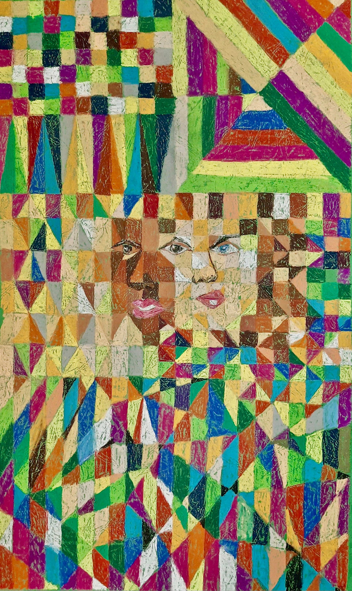
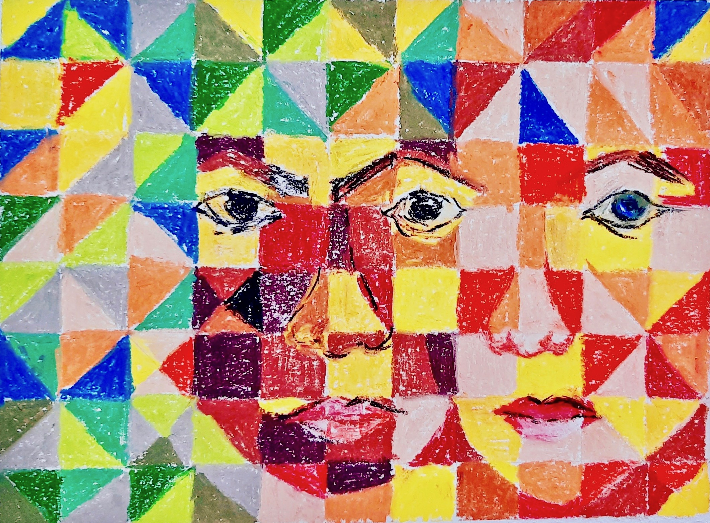
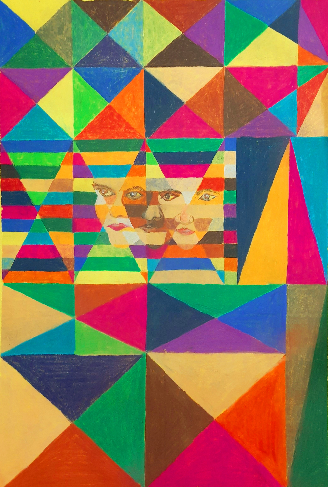
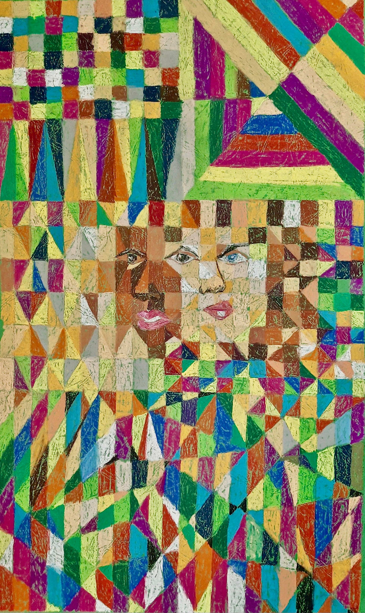
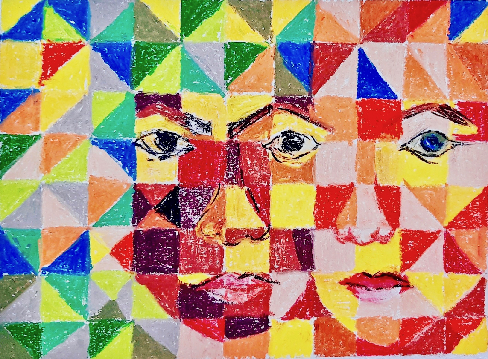
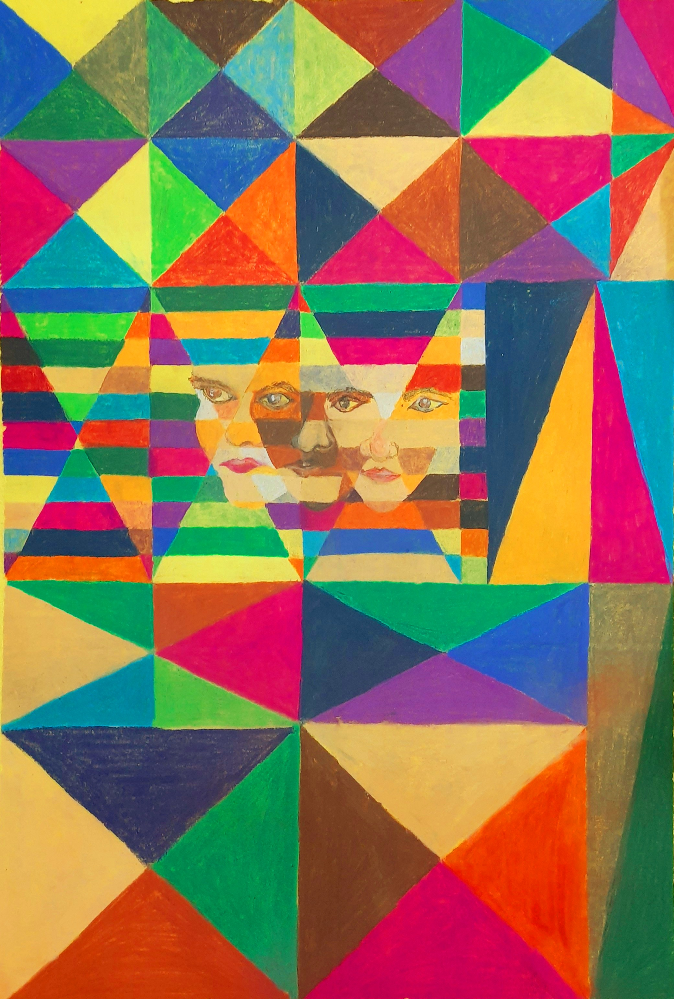

About the artist:
"Labdhi Shah is an artist based in Ahmedabad, India. Trained as an economist, clinical psychologist, and art therapist, she is a self-taught artist. She specializes in finger-painted art works created from intuition without any reference or pre-sketch, distilling the purest expression of her emotion into her art. She works with a variety of media including watercolor, acrylic, charcoal, and ink, and enjoys the uniqueness of each medium. Her art was first exhibited in 2013, and has been exhibited in many art exhibitions since then. She has been featured in the state newspaper, દિવ્ય ભાસ્કર, on multiple occasions for her artwork. Her recent participatory art installation on the theme of love, titled ‘Rainbow of emotions’ — ‘લાગણીઓ નું મેઘધનુષ’, was featured at the Abhivyakti art festival, 2020. Her work is currently on view at the virtual online exhibition `Collective Impact’ hosted by Ikouii in Atlanta, GA. Her passions include traveling and studying human complexity, and has been to over 20 countries."
Title of artwork:
Oneness
 





How does your piece amplify or raise awareness on socio-political issue(s)?
"Oneness. “But our humanity is our burden, our life; we need not battle for it; we need only to do what is infinitely more difficult—that is, accept it.” — James Baldwin That the color of a man’s skin can call into question his ‘humanness’, reflects that we have lost sight of our own ‘humanness’. Art seeks to convey the truth of the human experience, in all its complexity, as only art can. With my art, my effort is to share the faith I have in the capacity of love, and to accept the uniqueness of every human being irrespective of race, color, gender, and culture. I have consciously used geometry in these works, symbolizing the static nature of lines and shapes, in such a way that a change in the point of view changes the perception of the painting, lending it a dynamic quality within its fixed geometry."